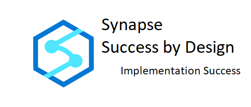
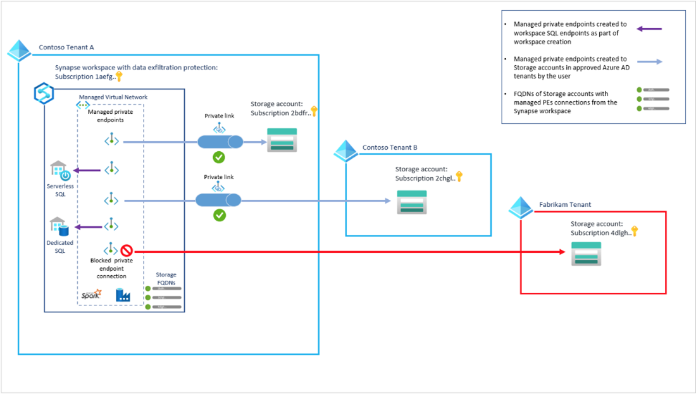

Workspace Design Evaluation #
Overview #
Synapse Workspace is a unified graphical user experience that stitches together your analytical and data processing engines, data lakes, databases, tables, datasets, and reporting artifacts along with code and process orchestration. Considering the number of technologies and services that are integrated into Synapse Workspace make sure that the key components are included in your design.
Synapse Workspace(s) Design Review #
Identify if your solution design is built using one or more than one Synapse Workspace. Identify what are the drivers of this design. While there might be a variety of different reasons, in most of the cases, the driver for multiple workspaces is either strict security guidelines or billing segregation. When determining the appropriate number of workspaces and database boundaries that are required be aware that there is a limit of 200 workspaces per subscription.
Identify what elements or services within each workspace need to be shared and with whom, like data lakes, integration runtime(s), metadata or configurations and code. Evaluate why this particular design has been chosen, what are potential synergies vs added costs and management overhead that the design may bring.
[NOTE: If a development environment has been designed – it will be evaluated in a separate step of this method as the design of the development environment is of critical importance to the success of your project.]
Data Lake Design Review #
It is recommended that the Data Lake (if part of the solution) be properly tiered: you want to divide your data lake into three major areas which contain Bronze, Silver and Gold datasets. Bronze or Raw layer might reside on its own separate Storage Account having strict/different security controls associated with it due to unmasked sensitive data that it might hold.
Security Design Review #
Review the security design for the workspace and compare it with the information you gathered during the assessment to make sure all of the requirements are met, and all of the constraints have been taken into account. For ease of management is it is recommended that users be organized into groups with appropriate permissions profiling: access control can be simplified by using security groups that are aligned with people's job roles. You only need to add and remove users from appropriate security groups to manage access.
Serverless SQL pools and Apache Spark tables store their data in an ADLS Gen2 container associated with the workspace. User-installed Apache Spark libraries are also managed in this same storage account. To enable these use cases, both users and the workspace MSI must be granted Storage Blob Data Contributor access to this workspace ADLS Gen2 storage container – verify this requirement against your security requirements.
Dedicated SQL Pools provide a rich set of security features to encrypt and mask sensitive data. Both dedicated and serverless SQL pools enable the full surface area of SQL Server permissions including built-in roles, user-defined roles, SQL authentication, and Azure Active Directory Authentication. Review the security design for the solution’s dedicated SQL pool and Serverless SQL pool access and data.
Review the security plan for your Data Lake and all the ADLS storage (and other) that will be part of the Azure Synapse Analytics implementation for your solution. ADLS Data Lake storage is not itself a compute engine and thus has no built-in ability to selectively mask data attributes. ADLS Data Lake permissions can be applied at the storage account or container level using RBAC and/or at the folder or file level using ACLs. Review the design carefully and avoid unnecessary complexity.
Be sure to consider the following during the security review:
-
Make sure configuring Azure Active Directory (AAD) is in the design.
-
Check for issues that may arise because some data is in another Azure tenant, needs to move to another tenant, or needs to be accessed by users in another tenant, etc. Ensure these scenarios are delt with in the design – you should have gathered some insight into this during the assessment.
-
Who are the personas for each workspace – how will they use the workspace?
-
How is the security designed within the workspace?
-
Who can view all scripts, notebooks, and pipelines?
-
Who can execute scripts and pipelines?
-
Who can create/pause/resume SQL and Spark pools?
-
Who can publish changes to the workspace?
-
Who can commit changes to source control?
-
-
Will pipelines access data using stored credentials or the workspace managed identity?
-
Do users have the appropriate access to the data lake to browse the data in Synapse Studio?
-
Is the Data Lake properly secured using the appropriate combination of RBAC and ACLs?
-
Have the SQL pool user permissions been determined for each type of user (data scientist, developer, administrator, business user, etc.)?
Networking Design Review #
Check the information from the assessment against the design:
-
Is connectivity designed between all the resources?
-
What is the networking mechanism to be used (ExpressRoute, Internet) private endpoints?
-
Do you need to be able to securely connect to Synapse Studio?
-
Has data exfiltration been taken into consideration?
-
Do you need to connect to on-prem data sources?
-
Do you need to connect to other cloud data sources or compute engines such as Azure ML?
-
Have Azure networking components like NGSs been reviewed for proper connectivity and data movement?
-
Has integrating with the private DNS zones been taken into consideration?
-
Do you need to be able to browse the data lake from within Synapse Studio or simply query data in the lake with serverless or PolyBase?
 And finally, identify all your data consumers and verify that their connectivity is accounted for in the design. Check that network and security outposts allow your service to access required on-prem sources and its authentication protocols and mechanisms are supported. In some scenarios you might need to have more than one Self-Hosted Integration Runtime or Data Gateway for SaaS solutions like Power BI.
Monitoring Design Review #
Review the design of the monitoring of the Azure Synapse components of your solution meet the requirements and expectations identified during the assessment. Verify that monitoring of resources and data access has been designed identifying each monitoring requirement (from assessment info) and matching it to the design: a proper monitoring solution should be put in-place as part of the first deployment to production to ensure failures are identified, diagnosed, and addressed in a timely manner. Aside from the base infrastructure and pipeline runs, data should also be monitored. Dependent upon the Azure Synapse components in use identify the monitoring requirements for each component – For example: if Spark Pools are part of the solution, a common area that should have data monitoring is the malformed record store.
Here are some items to consider in the monitoring design:
-
Who can monitor each resource type (pipelines, pools, etc.)?
-
How long do database activity logs need to be retained?
-
Will workspace and database log retention use Log Analytics or Azure Storage?
-
Will alerts be triggered in the event of a pipeline error? If so, who should be notified?
-
What thresholds for a SQL Pool should trigger an alert? Who should be alterted?
Source Control Design Review #
The default behavior for Synapse Analytics Workspace is to apply changes directly to the Synapse service using the built in Publish functionality. While optional, source control integration provides many advantages including better collaboration, versioning, approvals, and release pipelines to promote changes through dev/test/prod environments. Synapse allows a single source control repository per workspace which can be either Azure DevOps Git or GitHub.
Ensure the following items have been considered in the source control design:
-
If using Azure DevOps Git, are the Synapse Workspace and repository in the same tenant?
-
Who will be able to access source control?
-
What permissions will each user be granted in source control?
-
Has a branching and merging strategy been developed?
-
Will release pipelines be developed for deployment to different environments?
-
Will an approval process be leveraged for merging and for release pipelines?
[NOTE: Dev/Test/Prod environment design will be evaluated in the Solution Development Environment Design Review as a separate step of this method. The design of the development environment is of critical importance to the success of your project.]
Conclusion #
This review has covered the Synapse Workspace aspects of the design review. Validating the overall, high-level networking, security, monitoring, and workspace design against the solution and environment requirements collected during the Assessment earlier in the Implementation Success methodology. Additional design specifics for Synapse components (SQL Pools, Spark Pools, Pipeline, etc.) will be addressed in more detail in following Implementation Success design reviews.